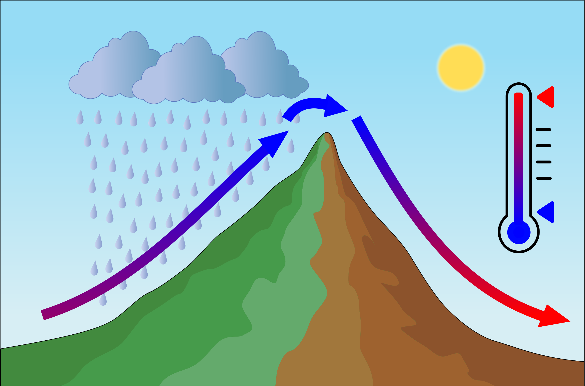

1. The atmosphere
· Definition
- The atmosphere is the gaseous envelope that surrounds the Earth
- It's divided in layers according to their characteristics
- It has no specified upper limit
· Composition of the atmosphere
- 78% nitrogen
- 21% oxygen
- 0,93% argon
- 0,03% - CO2, solid particles, etc
· Properties of the atmosphere
- Pressure and density always decrease with height
- Temperature and humidity, on average, decrease with height
- Air is a poor conductor of heat.
- Ozone is the only thing that absorbs the radiation of the sun.
LAYERS OF THE ATMOSPHERE
· The troposphere
· The tropopause
|
· The stratosphere
- Begins around 15 km above the surface of the Earth. It reaches up to 50 km altitude.
- It's isothermal* at its lowest altitudes. Then, temperature increases with altitude due to Ozone layer absorbing radiation from the Sun.
- Lapse rate is +1ºC / 1000m
- Cosmic radiation
*Isothermal: a layer of the atmosphere that has no temperature variation with height.
· The stratopause
- Upper boundary of the Stratosphere. Temperature is almost 0ºC.
· The mesosphere
- Temperature starts decreasing with height again
- Minimum temperature reaches -90ºC at the mesopause
· The mesopause
- Boundary between mesosphere and thermosphere
· The ionosphere
- Thermosphere
- Temperature increases due to the absorption of X-ray and ultraviolet rays from the Sun
- Exosphere
- Uppermost layer. Atmosphere transitions to space and air density is almost zero
2. ICAO International Standard Atmosphere (ISA)
INTRODUCTION
· Purpose of ISA
- Have an international reference in terms of atmospheric properties
- Relate aircraft performance to known values
- Calibration of pressure instruments
INTERNATIONAL STANDARD ATMOSPHERE
ISA CHARACTERISTICS
· ISA Temperature
- At MSL, temperature is 15ºC.
- Temperature decreases at a lapse rate of 1.98ºC per 1000 ft
- At 36.090 ft, temperature stops decreasing. It remains constant at a value of -56.5ºC
- At 65616 ft (20 km), temperature starts increasing 1ºC / 1000 m.
· ISA Pressure
- At MSL, pressure is 1013'25 hPa.
- Pressure decreases at a rate of 27 feet / hPa at sea level
- By 18000 ft, pressure lapse rate is 50 ft / hPa
- Pressure is half at 18.000 ft approximately
· ISA Density
- 1225 grams / m³
- Density is half at 20.000 ft
- Density is a quarter at 40.000 ft
· ISA deviation
- ISA Deviation = Ambient temperature - ISA temperature
- An ISA deviation of minus 6 means that the actual conditions are 6 degrees colder than ISA.
3. Heat and temperature
DEFINITIONS
· Heat vs temperature
- Heat: A form of energy which causes vibration in the molecules of any material. Measured in Joules (J)
- Temperature: Also related to heat, but not quite the same. Relates to both, kinetic energy of molecules in the material and also the amount of particles it contains. Measured in degres (ºC or ºF)
· Units of temperature measurement
- Celsius
- Farenheit. ºF = (ºC * 9 / 5) + 32
- Kelvin. K = ºC + 273
· Temperature reporting
- Temperatures are reported to the nearest whole degree Celsius (ºC). Values of 0.5 degrees are rounded up
- A temperature of 8.5ºC is reported as 09
- A temperature of +0.2ºC would be reported as 00.
- A temperature of -0.2ºC would be reported as M00.
· Temperature is measured with a Stevenson Screen
|
HEAT ABSORPTION
· Only about 45% of the radiation received by the atmosphere is absorbed by the surface of the Earth.
- 20% is absorbed by atmosphere and cloud
- 25% is scattered and reflected by clouds
- 5% is scattered by the atmosphere
- 5% is reflected by the surface of the Earth.
· Process of heating up the atmosphere
- Insulation. The radiation reaching the Earth's surface raises its temperature. Influenced by.
- The angle of the rays. More insulation received if rays are perpendicular to Earth's surface.
- Nature of the surface. For example, water absorbs less heat than sand.
- Transparency of the atmosphere. Radiation can be reduced by clouds, etc.
- Distance from the Sun. Sun is closest at January.
- Heat output from the Sun, which can lead to ice ages or warm periods.
- Conduction. Warm surfaces heat up the air next to them
- Convection. Heated air goes up and heats more air.
- Advection. It's the transfer of heat horizontally due to wind.
DIURNAL VARIATION OF TEMPERATURE
· Diurnal variation of temperature
- Surface:
- Maximum temperature at mid solar day
- Minimum temperature shortly after sunrise (around 30 minutes)
- Air at 4 ft:
- Maximum temperature is reached at mid solar day +2hrs
- Minimum temperature after sunrise +1hr.
- Variation is maximum when sky is clear, calm and over land (no clouds, no wind, far from coastal areas)
4. Pressure
GENERAL
· Definition:
- Pressure is the force exerted by the column of air above an object.
- Generally measured and transmitted in hPa or inches of mercury.
· ISA values
- At MSL, pressure is 1013'25 hPa.
- In other units, 1013'25 hPA = 14.7 psi = 1 atmosphere = 29.92 in Hg = 760 mm Hg
· Pressure always decreases with height
- When we climb to higher altitudes, the column of air remaining above us is smaller compared to the column of air that we have above us when we are on the ground. This explains that pressure is lower at altitude.
- The rate of pressure decrease reduces as height increases.
- Between 0 and 5000 ft, there is a pressure differential of 150 hPa approximately
- Between 30.000 and 35.000 ft, pressure differential is 55 hPa approximately
· Diurnal variation of pressure
- Lowest daily pressure at 4 and 16 o'clock
- Highest daily pressure at 10 and 22 o'clock
- Variation is heavier at the Equator (+-3 hPa) and negligible at the poles.
TRANSMITTING PRESSURE
· Q-codes
- QFE -> Pressure observed at a location. QFE set up will lead to a reading 0 ft when standing at the airport.
- QNH -> QFE corrected to Sea Level using ISA. Setting up QNH in the altimeter will lead to reading the airport elevation when standing at the airport.
- QFF -> It's the real pressure at sea level using ambient conditions.
- QNE -> Altitude you expect your altimeter to read when you land at an airport using SPS. Used if pressure setting is out of instrument range.
- SPS -> Standard Pressure Setting (QNH 1013)
PRESSURE DROP WITH HEIGHT
· Influence of temperature
- Hot weather -> Atmosphere expands. Now, instead of 27 ft / hPa, it actually takes more feet to decrease an hPa
- Cold weather -> Atmosphere contracts. Now, we need less ft per hPa.
- This means that, when flying in cold weather, true altitude is less than indicated. In other words, altimeter overreads.
- When transitioning from hot to cold weather, the true altitude of an aircraft will decrease even though the altimeter will read a constant altitude.
· Height corresponding to 1 hPa -> 96 * t / P
- t = Temperature (in Kelvin)
- P = pressure (in hPa)
QNH VS QFF
| Atmosphere colder than ISA | Atmosphere warmer than ISA | |
|---|---|---|
| Above MSL | QNH < QFF | QNH > QFF |
| Below MSL | QNH > QFF | QNH < QFF |
PRESSURE CHARTS
· Definitions related to pressure charts
- Isobars are lines that join zones of equal pressure
- Pressure gradient is the rate at which pressure changes. Steep or small gradients can be possible.
- Isallobars are lines that join zones of equal rate of change.
- Isohypses: Charts that join points of equal true height of a pressure surface. They indicate the true altitude of a pressure level.
· Horizontal pressure patterns.
- H. High pressure. Often associated with good weather
- R. Ridge of high pressure. It's a prolongation of a high. Associated with even better weather
- L. Low pressure. Associated with thunderstorms
- T. Trough of low pressure. Prolongation of a low, involving even worse weather.
- S. Secondary depression. Usually, even worse weather tan in the primary.
- C. Col: A region between a high and a low with uniform pressure. Involves fog in winter and thunderstorms in summer.
- F. Flat: A region with no pressure gradient. Can have any weather.
5. Density
GENERAL
· Definition
- Density is the mass per unit volume
- Mathematically, density = mass / volume
· Factors affecting density
- Pressure: The more pressure, more density
- Temperature: If temperature increases, molecules expand, reducing density. Density is inversely proportional to temperature.
- Water vapour: Water vapour is less dense than dry air. Therefore, the more water vapour, the less density.
· Vertical variation of density
- Density always decreases with height.
· Horizontal variation of density
- At the surface
- Air is colder at the poles than in the Equator.
- Therefore, air is denser at the poles.
- At the tropopause
- Air is colder at the Equator than in the poles.
- This is because the tropopause is higher at the Equator, so air has "more altitude" to cool down.
- Therefore, air is denser at the Equator.
- Density is considered uniform at all latitudes at an altitude of 26.000 ft approximately
· Diurnal variation of density
- It's opposite to the diurnal variation of temperature
- Highest density occurs 30 minutes after sunrise
- Lowest density occurs 2 hours after mid solar day
DENSITY ALTITUDE
· Definition
- Density altitude is the altitude in ISA that has a density equal to the actual ambient density.
· High density altitude
- High density altitude reduces engine power, fuel consumption, lift and accuracy of aircraft pressure instruments.
- High density altitude is likely to occur in high elevation, hot weather and humid conditions.
· Calculating density altitude
- Density altitude = Current pressure altitude + 120 ft per º ISA deviation
- Note: Pressure altitude is the altitude that an altimeter would read with a setting of 1013 hPa
- CR3 and CRP5 can also be used for density altitude calculations
6. Altimetry
· True altitude vs altimeter altitude
- The difference between true altitude and altimeter reading due to temperature difference gets larger with an increase in altitude.
- True altitude = Pressure altitude +- ( 4 x Thousands of feet x ISA Deviation)
- Note that, if a datum above MSL is given, this error must be calculated for the layer between the datum and the aircraft, EXCLUDING the layer below the datum.
- For example, for an aircraft flying at FL100 and a weather station at 4000 ft, altitude of the aircraft above the datum would be 6000, which is the figure we have to use to calculate the error.
- We then add 4000 to the result to calculate the aircraft's true altitude.
- This is because layer below the meteorological station is considered to be ISA conditions.
- Remember that, if air is colder than ISA, true altitude will be lower than indicated and viceversa
· Remember that, unless otherwise stated, we use 27 ft per hPa to calculate these questions.
EXAMPLE QUESTIONS
· An aircraft is at an airfield with an elevation of 420 ft. The altimeter setting is 1002 but the actual QNH is 997. What is the altimeter reading?
- The elevation of the airfield is 420 ft. With the correct QNH set (997), altimeter should read 420 ft.
- However, we are using 1002 as a reference.
- 1002 - 997 = 5 hPa difference = 135 ft difference
- Because higher pressure is found at lower levels, 1002 is at a lower level than 997. Therefore, the distance will be bigger.
- 420 ft that it should read + 135 ft of error = 555 ft is the indicated altitude
· What is the altimeter reading if the setting is 978, the QNH is 993 and the airport elevation is 770 ft.
- With the correct QNH (993), altimeter should read 770 ft
- However, 978 is used as a reference
- 15 hPa difference = 405 ft difference
- The height of 978 hPa is higher than the height of 993 hPa. Therefore, distance will be shorter
- 770 ft that it should indicate - 405 of error = 365 ft indicated altitude
7. Wind Theory. Low level wind
INTRODUCTION
· Wind is the sustained horizontal movement of air, caused by variations in pressure.
- Wind is a vector and has both, direction and speed
MEASURING AND REPORTING WIND
· Wind direction
- It's the direction from which the wind is blowing.
- METAR - TAF gives wind in true direction
- ATIS - ATC give wind in magnetic direction
- Rounded to the nearest 10º
- As a rule of thumb: if you read it, wind is true; if you hear it, wind is magnetic.
· Wind symbols
- Wind blows from feather to tip
- Feathers always point to the side of low pressure
- Half feather = 5 kt
- Full feather = 10 kt
- Solid pennant = 50 kt
· Measurement
- Direction measured with a wind vane
- Speed measured with an anemometer
- Measurement taken from 10m / 30ft AGL
· Definitions
- Gust: Increase in speed of short duration
- Lull: Decrease in speed of short duration
- Squall: Increase in speed, lasting for at least 1 minute
- Veering: Clockwise change of the wind direction
- Backing: Anti-clockwise change of the wind direction
FORCES AFFECTING WIND
· Pressure Gradient Force (PGF)
- It's the force that creates wind from a high pressure region to low pressure.
- A pressure gradient exists when two points at the same altitude have a different atmospheric pressure.
- The size of this force depends on isobar spacing.
- If isobars are close -> pressure gradient is high -> steep PGF -> strong winds
- If isobars are well spaced -> pressure gradient is low -> slack PGF
· Geostrophic Force (GF)
- Also known as Coriolis.
- Coriolis effect rotates northgoing / southgoing wind into the east.
- This is caused by different rotational speeds of the Earth at different latitudes
- Geostrophic Force = 2 w d v sin (lat)
- w = rotational speed
- d = air density
- v = wind speed
- It can be seen from the formula that Geostrophic Force increases with wind speed and towards the poles
- Geostrophic Force acts perpendicular to wind direction
· Friction
- It's a force that resists movement (it's direction is opposite to the movement's direction)
- Exists within the friction layer
- Greater over land than over sea
- Directly proportional to air density
RESULTING WIND SYSTEMS
· Geostrophic wind
- Geostrophic wind is created when Geostrophic Force equals Pressure Gradient Force
- For a wind to be geostrophic, it has to
- Be above the friction layer
- Be above 15º latitude
- Flow parallel to a straight isobar
- Occur in an unchanging pressure situation
· Buy Ballot's Law: In the Northern Hemisphere, if you align yourself with the wind, the low pressure area is on your left hand side.
- In the Southern Hemisphere, the low pressure area would be on your right hand side.
· Gradient wind
- Occurs when air rotates around a low or a high pressure
- Speed is lower in a low pressure; higher in a high pressure area
- Isobars are curved
- In the Northern Hemisphere, around a low pressure area, wind flows in anti-clockwise direction and viceversa
- In the Southern Hemisphere, around a low pressure area, wind flows in a clockwise direction and viceversa.
- For the same pressure difference, geostrophic wind speed will be greater at lower latitudes.
· Surface wind (affected by friction layer)
- In the lower part of the troposphere, wind suffers from friction. Friction is opposed to the movement of air. Therefore, it helps Geostrophic Force.
- Effect of friction in wind direction
- Northern Hemisphere: wind backs and decreases
- Southern Hemisphere: wind veers and decreases
- At the sea, speed in the friction layer is 70% of upper wind speed, and wind backs around 10º.
- At land, speed in the friction layer is 50% of upper wind speed, and wind backs around 30º.
- In rotating pressure system, friction causes the wind to slightly rotate towards the low pressure area.
Note: the friction layer reaches an altitude of 2000 ft by day and 1000 ft at night
DIURNAL VARIATION OF WIND
· Diurnal variation of the surface wind
- Friction increases with density.
- Since friction is increased at night, wind backs more (in the Northern Hemisphere) and slows down
- During the day, the opposite happens
· Diurnal variation at 1500 ft
- At this altitude, friction layer only exists during daytime
- Therefore, during daytime, wind backs and decreases compared to night (for Northern Hemisphere)
8. Wind Theory. Upper winds
INTRODUCTION
· Upper winds
- Temperature differences at the surface generate pressure differentials at altitude.
- These pressure differentials start air movement, causing wind.
· Buy Ballot's Law
- In the Northern Hemisphere, if wind hits you at your back, temperature is lower at your left.
· Predominating winds
- Between 10ºN and 10ºS, extending to 20ºN in summer and 20ºS in winter, prevailing winds are easterly (they come from the east)
- Because almost no pressure gradient exists, winds in this region are very weak.
- Anywhere else, prevailing winds are westerly.
JET STREAMS
· Jet streams
- Strongest upper winds are located just below the tropopause, and known as Jet Streams
- They are located where the tropopause jumps in a step.
· Jet Stream characteristics
- Longitude: 1500 nm
- Width: 200 nm
- Depth: 12.000 ft (2nm)
- Ratio between width and depth is 100:1
· Jet Stream speeds
- 60 - 80 kt -> minimum
- 100 - 150 kt -> frequent
- 150 - 200 kt -> less frequent
- More than 200 kt -> rare
TYPICAL JET STREAMS
| Jet Stream | Altitude | Latitudes / Location | Typical wind speeds | Comments |
| Subtropical Jet Stream | FL400 | In the area of subtropical anticyclones Northern Hemisphere: 25 - 40º N Southern Hemisphere: 35 - 45º S | Up to 300 kts | More or less permanent, they only move north or south as subtropical highs move |
| Polar Front Jet Stream | FL300 | Northern Hemisphere: 40º - 60º N Southern Hemisphere: 40 - 50º S | Up to 150 kts | Associated with Polar Front Depressions |
| Arctic Jet Stream | FL200 - FL250 | Only present during winter at 55ºN. It affects Canada and Siberia mainly. | 75 to 100 kts | * |
| Polar Night Jet Stream | FL700 | Only at latitudes of 70º, when permanent darkness occurs | 70 - 150 kts | High altitude. Doesn't affect aircraft |
| Equatorial Easterly Wind | FL450 | Only during summer, flowing from the Bay of Bengal (India) towards Ethiopia and Sub Sahara | 25 - 70 kts | Associated with temperature differences between inland Asia and the sea further south of it. |
9. Turbulence and windshear
DEFINITIONS
| Turbulence | Variations in the wind that will disturb aircraft's attitude, but not significantly its flight path |
| Windshear | Variations in the wind that will displace an aircraft abruptly from its intended path and necessitate substantial control to regain it |
· Classification of windshear
- Vertical shear
- It's the change of the horizontal wind vector with height
- Measured in knots / 100 ft
- Horizontal shear
- It's the change of the horizontal wind vector with horizontal distance
- Measured in knots / 1000 ft
TURBULENCE REPORTING CRITERIA
· According to its incidence
- Occasional. Less than ⅓ of the time
- Intermittent. Between ⅓ and ⅔ of the time
- Continuous
· According to its intensity
| Intensity | Aircraft reaction | Reaction inside aircraft |
| Light | Slight changes in attitude or altitude. IAS fluctuates 5-15 kt. | Occupants may feel a slight strain against seat belts or shoulder straps. Unsecured objects may be displaced slightly. Food service may be conducted and little or no difficulty is encountered in walking. |
| Light chop | Slight and rapid bumpiness, without changes in attitude or altitude. No speed fluctuations. | |
| Moderate | Greater intensity than light turbulence. Changes in altitude or attitude occur, but aircraft remains under positive control at all times. IAS fluctuates 15-25 kts. | Occupants feel definite strains against seat belts or shoulder straps. Unsecured objects are dislodged. Food service and walking are difficult. |
| Moderate chop | Rapid bumps or jolts, more intense than light chop, but without changes in altitude or attitude. IAS may fluctuate slightly. | |
| Severe | Abrupt, large changes in altitude / attitude. Aircraft may be momentarily out of control. IAS fluctuates more than 25 kt. | Occupants are forced violently against seat belts or shoulder straps. Unsecured objects are tossed about. Food service and walkign impossible. |
CAUSES OF TURBULENCE
· Mountain waves
- Also known as standing waves or lee waves
- Conditions for them to form:
- A wind blowing perpendicular to the mountain range (+/- 30º)
- Wind must steadily increase with height, reaching a minimum of 15 kts at the summit
- Mountain peak must be at the height of a stable layer, sandwiched between two less stable layers.
- If air is humid enough, standing waves can lead to the formation of clouds indicating their presence.
- Lenticular clouds may form above rotors due to the upwards and downwards movement of air. They are stationary.
- Rotor clouds can be formed downwind of the ridge, below the lenticular, and rotate about a horizontal axis
- Note that if the atmosphere is not humid enough, mountain waves may have no visual indication
- Avoiding mountain waves
- Avoid flying near the rotor zones
- In dry air, there are no clouds to alert of mountain waves
- Extremely high vertical velocities are possible
- Airframe icing is likely to be present due to orographic intensification
- Wind shears are often concentrated above and below the core
- In order to avoid mountain waves, fly at an altitude double the elevation of the mountain and parallel to the ridge.
· Fronts
- Wind will shear at the frontal surface as a front advances through a certain location.
- Frontal turbulence is very likely if:
- Fronts have a strong convergence
- Fronts have a sharp change in wind direction
- Front moves at +30 kt
- Front has a marked temperature difference
· Clouds
- Turbulence is to be expected within clouds
- Specially intense in vertical development clouds, where updrafts and downdrafts alter the aircraft's trajectory
- Severe turbulence is associated with TCU / CB
· Mechanical turbulence
- Caused by friction of air flowing over the Earth's surface, and air encountering obstructions such as hills, mountains, buildings, trees, etc.
- Turbulence increases as wind speed increases.
· Thermal turbulence
- The insulation process ends up heating the air in contact with the Earth's surface.
- Warmer air becomes less dense, and starts to rise.
- The vertical movement of air generates turbulence to aircraft flying above it.
- Thermal turbulence is greatest:
- During early afternoon
- During summer
- Above surfaces that are noticeably warmer than its surrounds (e.g, asphalt next to the sea)
· Clear air turbulence
- Associated with Jet Streams, although it can occur anywhere
- If lines of equal wind speed (isotachs) are very close together, wind speed can change very rapidly, leading to CAT.
- Maximum CAT is likely to be found towards the cold air side (polar side) of the jet stream, and from the same level of the core to below it.
- CAT frequently occurs near the tropopause, in the band from 7000 ft below it to 3000 ft above it.
· Upper level troughs and ridges
- Air is slowed down to curve through troughs and ridges, making them a cause of CAT / horizontal wind shear.
· Upper level convergence and divergence
- In areas of strong convergence or divergence, Clear Air Turbulence may occur
10. Humidity
INTRODUCTION
· What is humidity?
- Humidity is the concentration of water vapour in the air.
- Specially relevant in aviation since high humidity can lead to clouds or even precipitation.
LATENT HEAT
· What is latent heat?
- Latent heat is the amount of energy absorbed or released by a substance during a change in its physical state (phase) that occurs without changing its temperature.
- When ice changes to water vapour, latent heat is absorbed from the environment.
- When water vapour changes to water or ice, latent heat is released to the environment.
· States of water
- Gas. Molecules move freely. Latent heat absorbed
- Liquid. Molecules move, but not so freely. Latent heat is medium.
- Solid. Molecules are fixed. Latent heat is minimum.
· State changes
| Condensation | Change of state from vapour to liquid. Latent heat is released. Requires condensation nuclei. |
| Freezing | Change of state from liquid to ice. Latent heat is released. Requires freezing nuclei. |
| Melting | Change of state from solid to liquid. Latent heat is absorbed. |
| Sublimation | Change of state directly from solid to vapour, without becoming liquid at any time. Latent heat is absorbed. |
| Deposition | Change of state directly from vapour to solid, without becoming liquid at any time. Latent heat is released. |
HUMIDITY
· Definitions
| Absolute Humidity | Actual amount of water vapour in unit volume of air (gm/m³) |
| Humidity Mixing Ratio | Actual amount of water vapour contained in unit mass of dry air (gm/kg) |
| Saturation Mixing Ratio | Amount of humidity that a kg of air can absorb (mg/kg) |
| Relative Humidity | This is the amount of humidity that the air has as a percentage of how much it can hold. (HMR / SMR) * 100. |
| Dew point | Temperature at which relative humidity becomes at 100%.
|
· Calculating relative humidity
- As a rule of thumb, relative humidity can be calculated the following way:
- RH = 100% - (5 * Difference between temperature and dew point)
VARIATION OF HUMIDITY WITH TEMPERATURE AND PRESSURE
· Variation of humidity with temperature
- As temperature increases, a parcel of air is able to contain more water vapour
- Conclusion: if temperature increases, relative humidity decreases
· Variation of humidity with pressure
- As pressure drops, air is able to absorb more water vapour
- For this reason, air that is forced to rise will need to be further cooled down to reach saturation.
- Dew Point Lapse Rate = 0.5º C / 1000 ft
- Conclussion: if pressure decreases, relative humidity decreases
· Effect of temperature on the release of latent heat
- At lower temperatures, air can hold less water vapour before becoming saturated.
- If condensation occurs, less latent heat will be released.
- This is the reason why big thunderstorms don't occur at the poles: air is so cold that the energy released by condensation is too low to create a thunderstorm
SATURATION
· Saturated air
- Air is saturated when it contains all the water vapour that it can contain at a given temperature.
- When air is saturated, relative humidity equals 100 %.
- If saturated air is cooled down even more, the air gives up water vapour through condensation. A cloud begins to form.
- Two ways to saturate air:
- Adding more water vapour
- Reducing its temperature
· Cooling beyond saturation
- When a parcel of air is cooled down beyond saturation, water vapour condensates into water droplets (note that condensation nuclei is required for this to occur.
- As a consequence, latent heat is released to the atmosphere, increasing the environmental temperature.
- Clouds start being developed.
MEASURING HUMIDITY
· Wet and dry bulb thermometer
- A thermometer has two bulbs, one is submerged in water (in a saturated environment) and the other one is left in the air.
- If air is saturated, both bulbs will indicate the same temperature because no evaporation is present, and, therefore, no latent heat is being absorbed from the environment.
- If air is unsaturated, temperature readings will be different because evaporation will absorb latent heat from the environment, reducing the temperature of one of the bulbs.
· Hygrometers
- Hygrometers are materials which expand and contract with a change of humidity.
- Examples: Human hair or the intestine of a sheep are known as good hygrometers.
11. Adiabatics & Stability
INTRODUCTION
· Adiabatic temperature changes
- Adiabatic temperature changes occur as a result of expansion and compression, without the addition or extraction of heat from the environment.
- Specially significant when air is forced to rise or sink.
- Rising air expands, and, therefore, is cooled down adiabatically.
- Sinking air contracts, and, therefore, is heated adiabatically.
LAPSE RATES
· Lapse rates
- Dry Adiabatic Lapse Rate (DALR) = 3ºC / 1000 ft
- This means that, unsaturated air, if forced to rise, will cool down at a rate of 3º per thousand feet.
- Saturated Adiabatic Lapse Rate (SALR) = 1.8ºC / 1000 ft
- This means that, saturated air, if forced to rise, will cool down at a rate of 1.8º per thousand feet.
- Environmental Lapse Rate (ELR). This is the actual lapse rate of the current atmosphere. Changes from day to day.
STABILITY
· Atmospheric stability criteria
- Stable air: A parcel of air that has been forced to rise will go back down when the lifting force disappears.
- Neutral: A parcel of air that has been forced to rise will remain at its new altitude when the lifting force disappears.
- Unstable air. A parcel of air that has been forced to rise will rise even more when the lifting force disappears
· Inversions
- During an inversion, upper air is warmer than lower air.
- If a parcel of air is forced to rise, it will cool down at DALR until it becomes saturated
- Because the parcel of air becomes colder than the air around it, when the lifting force disappears, it will be denser, hence heavier, hence it will return to its previous altitude
- This is the reason why inversions are absolutely stable
· Steep ELR
- When the ELR is greater than DALR, temperature falls very quickly with altitude.
- Any parcel of air forced to rise will remain warmer than the atmosphere, hence, it will tend to continue rising because it's less dense.
- Therefore, a steep ELR means that the atmosphere is unstable.
· ELR between DALR and SALR
- For example, an ELR of 2.5ºC / 1000 ft means that the temperature of the air drops 2.5ºC as we climb in steps of 1000 ft
- A dry parcel of air forced to rise will cool down at 3ºC / 1000 ft, therefore, if air is dry, it will end up being cooler than the rest of the atmosphere, so it will be denser, and it will end up sinking (stability).
- Once air becomes saturated, it will cool down at a rate of 1.8ºC /1000 ft if it is forced to keep rising. Therefore, it will become warmer than the rest of the atmosphere, which means it will continue rising after the lifting force is gone (instability)
- These conditions are known as conditional instability.
· ELR equal to DALR (SALR)
- If ELR is equal to DALR (SALR), dry (saturated) air forced to rise will end up with the same temperature as air around it.
- We call this neutral stability for dry (saturated) air.
CALCULATING CLOUD BASE
· Calculating clouds base
- Dew point lapse rate = 0.5ºC / 1000 ft
- DALR = 3ºC / 1000 ft
- With height, temperature and dew point of a parcel of air will get closer at a rate of 2.5º C / 1000 ft, which equals 1ºC / 400 ft
- Therefore, cloud base = 400 ft x Difference between dew point and temperature
· Example: Temperature 16º C, Dew point 11º C
- Temperature difference = 5º
- Cloud base = 400 ft x 5º = 2.000 ft
- If a lifting force exists, clouds are to be expected at 2.000 ft
12. Clouds
CLASSIFICATION OF CLOUDS
· Classification depending on stability
- Stable atmosphere will lead to stratiform clouds. These clouds have large horizontal but little vertical extent.
- Unstable atmosphere will lead to cumuliform clouds These clouds have large vertical extent.
· Classification according to cloud level
- High level: Clouds located between 16500 ft to 42500 ft
- Medium level: Clouds located between 6500 ft and 23000 ft
- Low level: Clouds below 6500 ft
CLOUD TYPES - STRATIFORM CLOUDS
LOW LEVEL CLOUDS
| ||
Source: wikipedia.org | Source: cloudatlas.wmo.int |  Source: metoffice.gov.uk |
| Stratus (ST) | Stratocumulus (SC) | Nimbostratus (NS) |
|---|---|---|
| Uniform grey or white colour. Can produce drizzle or snow grains. Usually involve overcast conditions, poor visibility and last for a while | Uneven grey, combining light and dark tones. The thicker the cloud, the darker it looks | Very dark grey, announcing rain or snow. They are usually generated at medium level, but they extend vertically down to low level. For this reason, they are sometimes considered medium level clouds. |
{kind=link}
MEDIUM LEVEL CLOUDS
| ||
Source: wunderstock.com | Source: wikipedia.org | |
| Altostratus (AS) | Altocumulus (AC) | |
|---|---|---|
| Similar to ST, but higher (a gap between the cloud and the horizon can be seen). Typically featureless | Like small popcorns. White or grey with shadows. Also known as Mackerel clouds. Rarely provides precipitation, and, if it does, it comes in the form of virga. | |
{kind=link}
HIGH LEVEL CLOUDS
| ||
Source: metoffice.gov.uk | Source: cazatormentas.net | Source: collinsdictionary.com |
| Cirrus (CI) | Cirrostratus (CS) | Cirrocumulus (CC) |
|---|---|---|
| Narrow soft clouds. They are short, detached, hair-like clouds found at high altitudes. During day time, they are whiter than any other cloud in the sky. During sunrise/sunset, they can adopt different colors. | Thin, soft clouds, but covering a large portion of the sky. Sunlight and moonlight can be appreciated through the cloud. Sometimes, they produce a halo. | Similar to altocumulus, but higher. They don't produce rain, but they can prelude stormy weather. |
VERTICAL DEVELOPMENT CLOUDS
· Cumulus (CU). Formed at any level from surface to 25000 ft
Cumulus Humilis Low vertical extent. Never associated with precipitation. | Cumulus Mediocris Medium vertical extent. Generally not associated with precipitation. | Towering Cumulus (TCU) Large vertical extent. They can produce precipitaiton in the form of rain showers. Cloud edges well defined, with a cauliflower shape. |
· Cumulonimbus (CB). Largest vertical clouds. They can exist alone or with multiple other CBs in a squall line. They involve:
| ||
Cumulonimbus Calvus Well defined edges at the top | Cumulonimbus Capillatus Fibruous top | Cumulonimbus Incus A subtype of CB Capillatus. An anvil-like top is formed by windshear at at high altitudes. |
· Altocumulus Castellanus (AC Castellanus)
|
CLOUD SPECIES
| Castellanus | Lenticularis Associated with mountain waves | Fractus Like "broken" or ripped off from the original cloud |
 | ||
Uncinus Fibrous, hair-like | Virga Precipitation that evaporates before reaching the ground | Mammatus Protuberances formed at the underside of CBs |
CLOUD REPORTING
· Cloud reporting criteria according to amount of clouds
- SKC (Sky Clear). 0 octas of clouds
- FEW (Few). 1 to 2 octas
- SCT (Scattered). 3 to 4 octas
- BKN (Broken). 5 to 7 octas
- OVC (Overcast). 8 octas
· Cumulonimbus reporting criteria
- ISOL (Isolated). Individual CBs
- OCNL (Ocasional). Well separated CBs
- FREQ ( Frequent). CBs with little separation
- EMBD (Embedded). CBs contained within layers of clouds
- OBSC (Obscured). CBs hidden by haze
· Measurement of cloud base
- Reference used can be height (for METARs and aerodrome reports), altitude (for low level forecasts) and flight level (for high level forecasts)
- Cloud base is reported in steps of 100 ft up to 10.000 ft; then, in steps of 1000 ft.
- Cloud base is rounded down.
CLOUD BASE VS CLOUD CEILING
· Definitions
- Cloud base is the height of the base of the clouds above the ground.
- Cloud ceiling is the height of the lowest layer of cloud being at least BKN or OVC.
· Consider this METAR: EGKK 121020Z 14004KT 110V180 9999 FEW020 SCT040 BKN050 14/13 Q1028
- Cloud ceiling is 5000 ft AAL since it's the lowest layer covering at least 4 octas.
13. Cloud triggers
INTRODUCTION
· How clouds are formed
- For clouds to be formed, air must be overloaded with water vapour beyond saturation.
- This can be achieved:
- 1) By cooling down a given parcel of air, without changing the content of water vapour in it
- 2) By adding water vapour to a given parcel of air, without changing the temperature of it
- 3) A combination of both
CLOUDS & TRIGGERS
· Turbulence cloud
- Associated conditions
- Stable atmosphere
- Wind speed of at least 8 knots
- Development
- Friction causes moving air to be forced upwards and downwards.
- Air forced to rise is mixed with air that is descending, resulting in an ELR of about 3ºC/100 ft.
- Air that is forced to rise cools down at DALR until it becomes saturated, producing layers of ST/SC.
- Above the friction layer, stability will still remain, and an inversion will exist above the turbulence cloud.
· Convection clouds
- Convection is the vertical movement of warm air.
- During sunny afternoons, specially during summer, some parcels of air can get remarkably warm, leading to ascending currents.
- When air reaches its critical temperature, cumulifurms clouds will form.
- This is the cause of thunderstorms during the late afternoon in Europe during summer.
· Orographic clouds
- Air is forced to rise due to the existence of a mountain.
- If air has enough water vapour content, it will reach saturation and a cloud will begin to form below the ridge of the mountain.
- The resulting type of cloud will depend on atmospheric conditions.
- Stable air:
- Stratiform clouds will form on the windward side
- Air descends once the trigger is removed, which also causes a stratiform cloud to be formed on the leeward side.
- Because of the water vapour lost by precipitation around the ridge, cloud base will be higher on the leeward side.
- Unstable air:
- Air continues rising and cloud base forms above crest level.
- Typical resulting clouds are CU / CB, and, if humid enough, even thunderstorms can result.
- These conditions can lead to the appearance of a cloud base below crest level and high cloud tops, obscuring high ground.
- Stable air:
· Frontal clouds
- When 2 masses of air meet, lifting occurs, and, as a result:
- Tthe warm front (stable) is occupied by stratiform clouds
- The cold front (unstable) is occupied by cumuliform clouds
· Convergence clouds.
- In a low pressure region, convergence occurs at the surface, leading to air being forced to rise.
- In troughs and fronts, where there is a sharp change in wind direction, air also converges and is forced to rise, leading to instability.
- Resulting clouds are CU or CB, with possible thunderstorms.
· Thin layer lifting
- A special phenomenon that occurs when an unstable layer suspended between two stable layers.
- Air rises until it hits the stable layer; then, it drops again until it reaches the unstable layer.
- This cyclic movement is repeated until these atmospheric conditions cease to exist.
- As a result, AC Castellanus clouds can be formed, and light to moderate turbulence can be present at the cloud height.
OTHER ATMOSPHERIC CONDITIONS AFFECTING CLOUDS
· Effect of inversions
- Inversions are absolutely stable.
- As a result, any rising air that reaches a stable layer will stop rising, and spreads horizontally instead.
- Inversions act as a lid, stopping vertical cloud development.
- Vertical development clouds could turn into stratiform clouds if humidity is still high.
· Effect of subsidence
- Descending air warms adiabatically, increasing the amount of water vapour that air can absorb.
- This will dissipate any cloud.
14. Visibility and fog
DEFINITIONS
· Reporting visibility
| Meteorological Visibility | Greatest distance at which a dark object can be recognized against a bright background, or a certain amount of candelas can be seen and identified against a dark background. |
| Prevailing Visibility | Distinction in visibility in contiguous or non contiguous sectors. The value of prevailing visibility is the maximum value of visibility in at least 180º around the observer. |
| Runway Visual Range (RVR) | Maximum distance that you can see in runway direction, measured with lights on, so it can be greater than the meteorological visibility. |
· Types of reduction in visibility
| Mist | When water droplets cause visibility to be reduced between 5000 and 1000 metres. |
| Fog | When water droplets cause visibility to be reduced below 1000 metres. |
| Haze | When solid particles cause visibility to be reduced between 5000 and 1000 metres. |
TRANSMISSION OF VISIBILITY
· Visibility reporting
- If visibility is less than 50m, it's reported as 0000
- Between 50 and 799m, visibility reported in steps of 50m
- Between 800 and 4999m, visibility reported in steps of 100m
- Between 5000 and 9999m, visibility reporteed in steps of 1000m
RUNWAY VISUAL RANGE
· Runway Visual Range
- Reported if meteorological visibility falls below 1500 m.
- Measurement of RVR:
- Done with transmissometers
- Measured at three points of the runway (Touchdown, Mid and End)
- Measured at a lateral distance of 120 m from centreline, at a height similar to an aircraft's cockpit.
TYPICAL VISIBILITY ASSOCIATED WITH METEOROLOGICAL CONDITIONS
· Some typical figures
- Heavy tropical rain: 50 - 100m
- Heavy snow: 50 - 200m
- Hill fog: less than 200m
- Snow: 200 - 1000m
- Drizzle: 500 - 3000m
- Moderate rain: 3000- 10000m
TYPES OF FOG
· Radiation fog
- Conditions necessary for radiation fog to form:
- Clear, calm and overland - This leads to maximum variation of temperature over night.
- High relative humidity - This allows that, when cooled, air reaches saturation.
- Light wind - Ideally below 5 knots. Stronger winds will create turbulence and lift the fog, turning it into a turbulence cloud.
- Formation:
- When Earth surface cools down over night, air is also cooled down, increasing its relative humidity.
- If relative humidity reaches 100%, condensation occurs, developing fog.
- Occurrence:
- Present during night and early morning.
- Resulting conditions:
- As a consequence of cooling, an inversion is formed above the fog layer.
- Dissipation can be achieved:
- By insulation, heating up the atmosphere and allowing air to absorb more water vapour.
- By strong winds, lifting the fog to a stratus cloud.
· Advection fog
- Formed by the movement of a warm and humid air over a cold surface.
- As air is cooled down by the cold surface, air reaches its saturation point.
- Occurrence:
- In winter, it occurs over land, since air coming from the sea is further cooled down.
- In summer, it occurs over sea, since air going from land to sea is cooled down.
· Hill fog (Orographic fog)
- As air is forced to rise on the mountains, it cools down, reaching its dew point.
· Steaming fog (Arctic Smoke)
- Occurs in polar regions when atmosphere is very stable.
- Extremely cold air blowing above water absorbs a bit of water vapour, which is enough to saturate it.
· Frontal fog
- Ahead of a warm front, Nimbostratus are common, producing a large amount of precipitation.
- Water vapour generated from this precipitation can saturate the air, creating fog.
- This fog travels with the warm front, up to 200 nm ahead of it.
· Valley fog
- Cold wind going down the mountains absorbs river humidity, and fog forms.
- Occurs in places where hills are covered by ice or snow.
· Freezing fog
- In the absence of freezing nuclei, water droplets can remain liquid below 0ºC. This is known as Super-Cooled Water Droplets (SCWD)
- Freezing fog is fog that contains SCWD. Upon contact with anything, these droplets will freeze on impact.
· Ice fog
- Can form in extremely low temperatures.
- Occurs when atmospheric conditions lead to the appearance of ice crystals, reducing visibility.
· Solid particles can also reduce visibility. The impact depends on the amount of particles, rate of production, rate of dispersal and distance from source. Some particles are:
- Smoke
- Sand
- Drifting snow (less than 2 m high)
- Blowing snow (more than 2 m high)
IN-FLIGHT VISIBILITY
· Visibility in the air
- Flight visibility: Maximum distance you can see when looking straight forward at flight level.
- Slant visibility: Maximum distance you can see looking down at the ground from flight level.
- Oblique visibility: Horizontal distance component of the slant visibility.
15. Precipitation
PRECIPITATION THEORIES
· Coalescence (Ice crystal) Theory
- Explains precipitation in clouds of any temperature
- Updrafts and downdrafts cause water droplets to collide and increase their size
- Once droplets are heavy enough, updrafts can't hold them, so they fall as precipitation
· Bergeron Theory
- Cloud temperature must be below freezing point
- The saturation vapour pressure of water is greater than the saturation vapour pressure of ice, so water vapour sublimates onto the ice crystals
- When big enough ice crystals are formed, ice crystals fall
- If air below the cloud is warm, precipitation will fall as rain. If air below the cloud is still below 0ºC, precipitation will fall as snow
CLASSIFICATION OF PRECIPITATION
· Duration of precipitation
- Showers: Associated with CB and CU. After a shower, the cloud dissipates.
- Intermittent. Associated with ST, SC. Precipitation falls from time to time
- Continuous. Associated with NS. Precipitation falls for at least 60 minutes.
· Intensity of precipitation
- Light. Associated with stratiform clouds (ST, SC, AS, AC)
- Moderate. Usually associated with stable clouds, but can also apply to showers
- Heavy. Associated with unstable clouds (NS, CU, CB)
· Types of precipitation
16. Icing
INTRODUCTION
· Definitions
- Frost Point temperature: Temperature to which air must be cooled in order to reach saturation with respect to ice surface, and further cooling will result in sublimation.
- Freezing level or 0º isotherm: Height at which environment is at 0ºC
ICING INTENSITY
· Airframe Icing Intensity Criteria
- Trace: Rate of accumulation is greater than rate of sublimation. Not hazardous unless encountered for more than 1 hour
- Light. Might create a problem if experienced for more than 1 hour. Not a problem if de-icing / anti-icing is used.
- Moderate. Short encounters are potentially hazardous. Use of anti or de-icing or a diversion is necessary
- Severe. Such rate that anti-icing equipment fails to control the hazard. Immediate diversion is necessary.
ICING THEORY
· Super cooled water droplets
- They are water droplets below 0ºC that remain liquid, and will freeze upon impact with something.
- Large SCWD can be found on lower levels of NS, CU and CB
- Small SCWD can be found in stratiform and cumuliform clouds
· The freezing process
- For every ºC below 0, 1/80th of the water droplet will freeze instantly on impact
- The remaining water will flow back and form clear ice over the airframe structure
TYPES OF ICE ACCRETION
· Airframe Ice Accretion in flight
- Impact Ice (Opaque Ice). Small droplets that completely freeze on impact (the latent heat released is negligible). Easy to remove
- Flowback Ice (Clear Ice). Caused by large droplets. Builds up very quickly. Hard to melt. Transparent and dangerous.
- Mixed / Cloudy Ice. Mixture of impact and flowback ice.
- Freezing Rain Ice. When rain (below 0ºC) hits aircraft skin and instantly freezes. Associated with flying below a warm front. This is the most dangerous type of icing.
- Hoar Frost: Water vapour sublimating in contact with a very cold airframe (below 0ºC). Typically descending since the airframe is still below 0ºC.
· Airframe Ice Accretion on the ground
- Hoar Frost. Water vapour changing directly into ice by sublimation when the aircraft skin is below 0ºC
- Freezing Drizzle. Small supercooled water droplets hitting the aircraft
- Packed snow. Fallen snow that collects on the upper surfaces of a parked aircraft
- Freezing Fog (Rime Frost). When supercooled water droplets are blown into an object, they freeze to build up a white coating on the windward side.
- Ice fog. Droplets have frozen into tiny crystals of ice in the air
- Glaze frost. Rain hitting the aircraft with a skin below 0ºC
FACTORS AFFECTING ICING
· Factors affecting the severity of icing
- Climbing / Descending. When descending, aircraft skin will be colder, being more prone to icing.
- Aerofoil Characteristics. Sharp edges tend to get more ice than smooth edges.
- Airspeed: The more airspeed, the more water droplets encountered per unit time.
- Kinetic energy. As speed increases, friction increases the temperature of the skin of the aircraft. Not really helpful against icing unless supersonic.
- Density of the cloud. Less water present in the cloud means less severe icing.
- Cloud base temperature. The more temperature, the more water vapour that is absorbed by the air and can be turned into ice.
- Orographic Intensification: Air forced to climb a mountain will have some wind blowing up, which can hold larger droplets, and freezing level will be lowered.
THREATS ASSOCIATED WITH ICING
· Airframe icing hazards
- Mass of ice: ice adds weight. This changes stall speed and centre of gravity, altering stability.
- Aerodynamic: Ice tends to form on the leading edges, reducing lift, stall AoA and increasing drag
- Instruments. Ice can block pitot and static inlets, leading to erroneous indications.
- Communications. Ice on aerials can cause radio interference.
- Systems. Undercarriage or flaps can be iced in the closed position.
- Visibility. An ice coating can cover the aircraft windscreen.
ENGINE ICING
· Engine icing
- Piston engines.
- For engines fitted with carburetors, icing can happen up to 30ºC OAT with as low as 30% relative humidity and a reduced power setting.
- Jet engines
- Changes in pressure at the engine air intake can produce icing at temperatures up to 10ºC OAT at high revolutions.
- Specially dangerous during take-off and approach. For this reason, engine anti-ice is generally used if TAT is below 10ºC in flight.
PROTECTION
· Ice protection and removal
- Ice dissipation.
- Ice disappears by melting if temperature is above 0ºC
- Ice can also disappear below 0ºC by directly turning into water vapour (sublimation)
- Ice protection
- Anti-icing (preventing the formation of ice by using chemicals, bleed air heating, etc)
- De-icing (removing any ice that has already been formed, by using chemicals, heating, mechanical rubber boots, etc)
17. Thunderstorms
INTRODUCTION
· Types of thunderstorms
- Frontal thunderstorms. They mainly occur at cold fronts, but can also occur on warm fronts. Common during winter.
- Squall Line Thunderstorms. They occur in warm sectors before the arrival of the cold front.
- Air mass thunderstorms. Caused by anything that isn't related to fronts. Common during summer.
· Conditions for thunderstorms to occur
- ELR greater than SALR (instability) for at least 10.000 ft above the freezing level.
- Sufficient water vapour to form and maintain the cloud and provide saturation.
- A trigger action.
· Note: All thunderstorms are cumulonimbus, but not all cumulonimbus are thunderstorms.
- Both of them have moderate to severe turbulence, icing and possible hail
- Thunderstorms additionally have lightning
SINGLE CELL THUNDERSTORM (1 - 2 hrs)
· 3 stages
- Developing / cumulus / initial stage (15 - 20 mins)
- Updrafts increase and cloud gets taller
- CU Humilis develops into Mediocris, then Congestus
- Updrafts of 3000 - 4000 ft per minute
- It's driven by latent heat released due to condensation
- The suction of air (entrainment) brings cooler air into the cloud, which could lead to a stop of the development process
- Usually, cloud becomes 20.000 ft tall (0ºC to -40ºC)
- Mature stage (15 - 20 mins)
- Precipitation begins
- Contains both, updrafts and downdrafts
- Vertical speeds of more than 6000 ft / min for updrafts and 2000 - 3000 ft / min for downdrafts
- Cloud can be up to 45.000 ft tall
- Air going down initially heats adiabatically. However, as water vapour evaporates, it absorbs latent heat from the environment, which cools down the air.
- Gust front: cold air going down undercuts warm air going in, creating a rotary cloud at the leading edge of the cloud. These rotary currents can extend up to a range of 25 nm and 6000 ft altitude
- Avoid flying close to thunderstorms
- Dissipating stage (up to 1 hour)
- Identified by an anvil on top of the CB, from where precipitation can occur
- Contains mainly downdrafts
- Cloud height up to 55.000 ft high
- Entrainment of dry air helps the dissipation
· Potential differences in and around thunderstorms
- Static electricity caused by collision of hail and ice crystals, freezing processes and melting of snow flakes leads to a negative charge of the bottom of the cloud. A potential difference is created between the cloud base (-) and the surface (+), leading to lightning
- Lightning strikes can have up to 300.000V and 30.000 Amps currents
MULTI CELL THUNDERSTORM (3-4 hrs)
· Same principle as single cell. However, as 1 cell matures, another one is formed by its gust front.
SUPER CELL THUNDERSTORM
· Super cell thunderstorm
- Characterized by tornadoes
- Happens when a marked change of wind velocity exists along the cell
- They can last for many hours and extend up to 65.000 ft
- The cloud is tilted out of the vertical, which can lead to having updrafts inside the cloud and downdrafts with precipitation leading the cloud.
- They typically occur in mid-west USA during spring and early summer.
· Stages
- Initial. Similar to single cell thunderstorm
- Super cell. Windshear causes cyclonic motion to occur, and a mesocyclone is formed within the cloud
- Tornado. Tornado develops below the storm
- Dissipation. When supply of moist air is cut off
TORNADOES
· Cyclonic ascending whirlpool of air:
- Diameter of 100 to 200m
- Very strong winds (up to 275 kt)
- Typically advancing at speeds up to 40 kt.
· Scale goes from 0 (light damage) to 5 (strong frame houses lifted off)
· Life cycle
- Initial. A visible condensation of funnel appears to descend
- Mature. Condensation of funnel continues until a Rear Flank Downward begins to wrap around the tornado.
- Dissipation stage. RFD cuts off the tornado's air supply.
SQUALL LINE THUNDERSTORM
· Squall Line Thunderstorms
- Lines of several thunderstorms may develop.
- Thunderstorms can advance at speeds up to 60 kt
- Severe weather event.
MESOSCALE CONVECTIVE COMPLEXES
· Many individual thunderstorms in a large area. Can last for more than 12 hours
THREATS ASSOCIATED WITH THUNDERSTORMS
· Hail
- Can exist inside the cloud, and also below the anvil.
- Severe damage can occur.
· Turbulence
- Severe turbulence associated within the cloud and close to it.
· Icing
- Generally present between 0ºC and -40ºC.
- Large updrafts can sustain big supercooled water droplets, that will freeze upon impact with the aircraft. Such big water droplets are not to be expected outside thunderstorms.
- The rate of ice accretion may exceed the capability of the Pitot / Static heat system.
· Downbursts. They last for 1 - 5 minutes.
- Microbursts (less than 4km radius, speeds of 150 kt)
- Macrobursts (more than 4km radius, speeds of 120 kt)
· Lighting
- Can cause temporary blindness to pilots, distortion, airframe damage, disruption to electrical equipment and inaccuracies with the compass.
· Static
- Aerial icing can cause interference.
· Water ingestion
- Water ingestion can lead to an engine flameout.
- Ignition systems are ran continuously during intense precipitation to help combustion remain stable.
THUNDERSTORM SEPARATION
· Threat management - Separation with thunderstorms
- Below FL200, thunderstorms must be avoided by, at least, 10 nm
- Above FL200, thunderstorms must be avoided by 20 nm
- Vertical minimum separation is 5000 ft
- It is preferable to fly upwind of the thunderstorm, since wind can blow precipitation and hail downwind of it.
- If you have to fly on the leeward side, avoid the thunderstorm by at least as many miles at the current wind speed (in knots). So, if wind speed is 60 kt, maintain lateral separation of 60 nm.
18. Air masses
INTRODUCTION
· What is an air mass?
- Air masses are large volumes of air that maintain more or less constant humidity and temperature in the horizontal.
CLASSIFICATION OF AIR MASSES
· Classification according to humidity
- Continental (c). Low absolute humidity. Forms over land
- Maritime (m). High absolute humidity. Forms over water
· Classification according to latitude
- Equatorial (E). Very warm. Originated below 20º N/S
- Tropical (T). Warm. Originated between 30 and 40º N/S
- Polar (P). Cold. Originated between 40-60ºN/S
- Arctic / Antarctic (A). Very cold. Forms only in winter over ice caps.
· Classification according to temperature
- Warm (w)
- Cold (c)
MODIFICATION OF AIR MASSES LEAVING THE SOURCE REGION
· Modification of air masses leaving the source region
- As air increases latitude, it cools down, increasing stability.
- Air that descends in latitude will heat up, becoming unstable.
- Air that moves over a large water surface absorbs moisture, increasing absolute humidity.
- Air that moves over land will lose water vapor, reducing its absolute humidity.
AIR MASSES AFFECTING THE UK IN SUMMER
Image source: rmets.org
· Air masses affecting the UK in summer
- cTw (continental, tropical, warm)
- From North Africa, and, in summer, also from the Balkans
- Very hot, very dry and stable
- Leads to clear skies and haze
- cPc (continental, polar, cold)
- From Scandinavia & continental Europe
- Short sea route -> Very little moisture added. Very cold conditions, leading to frost at night
- Long sea route -> More moisture added. SC/CU clouds with SHRA or snow
- mAc / cAc (maritime or continental, Arctic, cold)
- From the North. Very cold. High relative humidity but low absolute humidity. Unstable and moist air.
- It can lead to CU and CB at the coast that die inland
- This leads to clear skies with good visibility inland
- mTw (maritime, tropical, warm)
- From Azores anticyclone
- Very warm, moist, stable
- Over the sea, leads to ST, SC and fog
- Inland, leads to BKN SC/CU and ST
- mPc (maritime, polar, cold)
- Form North Atlantic.
- Cold, moist, stable, but gains instability as it decreases latitude.
- Leads to CU/CBs at the coast
- Possible radiation fog in land and less clouds
- mPw (maritime, polar, warm)
- Also known as returning polar maritime
- Cold, moist, stable air, leading to SC or fog over the coast.
- Inland, convection can cause CU/CB
- Can have stable and unstable characteristics
19. Fronts and Polar Front Depression
FRONTS
INTRODUCTION
· Definition of fronts
- A front is a zone where two air masses of different temperature or humidity meet.
- Cold air (denser) tends to undercut warm air.
- Warm air (less dense) tends to rise over cold air.
· Main global fronts
- Polar Front
- Arctic Front
- Mediterranean Front
- Intertropical Convergence Zone (ITCZ)
CLASSIFICATION OF FRONTS
· Quasi-stationary front
- Semi-stationary fronts. Front line is constantly "swinging".
- Very little interaction between both air masses, so no remarkable weather is triggered.
- Wind blows along the frontal zone.
· Cold front
|
· Warm front
|
CHARACTERISTICS OF FRONTS
· Isobars at fronts
- Isobars bend at the fronts due to the change in pressure.
- In a cold front, the change of direction is much steeper compared to a warm front.
· Speed of movement of fronts
- Warm air moves slower (at 2/3 of geostrophic force)
- Cold air moves faster (full geostrophic force) and catches up with the warm front
- Friction in the lower part of the cold front can cause a portion of warm air to be trapped "below" a cold air column. When the warm air is no longer able to support the cold and dense column above it, the cold column collapses, and a squall is produced.
· Definitions
- Frontogenesis. When a front is born. Indicated by dots in the front line
- Frontolysis. When a front dies. Indicated by crosses in the front line.
DEPRESSIONS
INTRODUCTION
· What are depressions?
- A depression is a region of low atmospheric pressure with the lowest pressure at the center.
- Associated with thunderstorms, bad weather, wind and precipitation.
- In the Northern Hemisphere, winds circulate anticlockwise in a depression.
- In the Southern Hemisphere, winds circulate clockwise in a depression.
· How do depressions form?
- Depressions can form in many ways
- Typical causes are convection, atmospheric instability or interaction between two air masses.
· What are typical depression characteristics?
- Size generally varies between 100 nm - 500 nm wide
- Life cycle of 14 days approximately:
- First 4 days, depressions continuously reduce their lowest pressure
- Last 10 days, pressure gradually reverts to that of the surrounding areas.
THE POLAR FRONT DEPRESSION (PFD)
· Polar Front Depression (PFD)
- Formed where subtropical air mass and polar air mass meet
- Formation: The warm air in the front is lifted upon interaction with cold air, creating a small low pressure area. This L gets bigger with time, as more air is suctioned and drawn inwards and being forced to rise, leading to the appearance of a noticeable depression.
- Location:
- Between Newfoundland and NW Scotland in July
- Between Miami and SW England in January
- The direction of movement of the depression is roughly the direction of the 1st and 2nd isobars of the warm sector.
· PFD Warm front
- Associated clouds are NS, AS, CS and CI
- Precipitation around 200 km ahead of front
- Cirrus and jet stream 1000 km ahead of front
· PFD Cold Front
- Cumuliform clouds
- Cirrus and jet stream 300 km behind
· Weather associated with the passage of a PFD
| Ahead of the Warm Front | At the Warm Front | In the Warm Sector | At the Cold Front | Behind the Cold Front | |
| Surface wind | Wind speed increases. Direction backs. | Veers and becomes westerly with strong gusts | Steady, usually from SW | Sharp veer. Gusts and squalls are likely | Steady and slight veer to SW |
| Temperature (and dew point) | Steady low (polar) | Gradual rise | Steady warm (tropical) | Sudden drop | Steady low (polar) |
| Pressure | Steady fall | Continues to fall | Steady | Initially, it may fall due to updrafts holding the weight of the column of air above it. Then, it starts to rise | Continues to rise |
| Clouds | Increasing to 8/8, cloud base gradually lowering, stratiform clouds predominant | 8/8, base very low. NS and ST likely | 6/8 to 8/8 cover, base low, ST or SC | 6/8 to 8/8. Base low, but rising. CU, CB, and sometimes NS. | 6/8, base lifting. CU and TCU likely. |
| Precipitation | None at first, becoming light continuous under AS and moderate continuous under NS. | Moderate continuous | Light, drizzle | Heavy rain, rain showers and snow showers. Thunderstorms and hail possible. | Showers, heavy rain at times. Thunderstorms and hail possible. |
| Visibility | Reducing to poor. | Very poor. Frontal fog likely. | Generally poor, unless unstable warm sector. | Good, except in showers. | Good, except in showers. |
· Types of fronts according to warm sector characteristics
- Kata front. Involves a stable warm sector with stratiform clouds
- Ana front. Involves an unstable warm sector, with cumuliform clouds. These might be embedded within layers of NS.
OCCLUSIONS
· Occlusions
- Because the cold sector moves faster than the warm sector, it ends up catching up to the warm sector. When this happens, it is known as an occlusion.
- Warm occlusion
- Occurs in winter
- The speed of a warm occlusion and a warm front are the same (2/3 GF)
- The rain falls ahead of the occlusion
- Cold occlusion
- Occurs in summer
- The speed of the occlusion is the same as the cold front (same line)
- Precipitation falls at both sides of the occlusion
- The point of the occlusion moves along the warm front to the south, as the front keeps advancing to the east. If we combine both movements, the point of occlusion moves SE.
· Back bent occlusion
|
20. Other depressions
· Secondary depressions
- They involve worse weather than primary depression
- Gales (strong wing and thunderstorm) on the outside of the secondary.
- Due to the anti-clockwise movement, the secondary swaps position with the primary and viceversa
· Thermal depressions
- When the Sun heats up a part of the surface, convective air goes up, creating a "vacuum" or a depression
· Polar Lows
- Happens in polar maritime air masses, due to their instability and lifted air. A low pressure region ends up being created.
· Orographic depressions
- Lack of air in the leeward side of a mountain can cause a depression
· Troughs of low pressure
- In troughs, air is convergent due to the sharp changes in direction, forcing it to rise (creating L)
· Dust devil
- Weather phenomena caused by differential heating of the surface
- Warmer surface heats the air in contact with it, causing convection.
- Stronger force than thermal lifting.
21. Anticyclones
CHARACTERISTICS OF ANTICYCLONES
· What is an anticyclone?
- An anticyclone is a zone of high atmospheric pressure at its centre.
- In the Northern Hemisphere, air circulates around a H in a clockwise direction.
- In the Southern Hemisphere, air circulates around a H in an anti-clockwise direction.
- The high pressure is generally caused by subsidence, which is vertical movement of descending air. This vertical movement acts as an increased weight of the column of atmosphere above the ground, rising the pressure.
· Formation of anticyclones
- When a convergence zone is formed in an upper level, air is forced to descend.
- Descending air increases stability.
- Usually, a subsidence inversion is formed
· Characteristics of anticyclones
- Isobars are generally well separated, involving very light winds.
- Associated subsidence and stability is associated with clear, quiet and settle weather.
- However, the fact that moisture and haze are trapped at the lower levels of the atmosphere can also bring poor surface visibility.
- Anticyclones are generally slow moving and may persist for long periods.
OTHER HIGH PRESSURE FORMATIONS
· Ridges of high pressure
- Usually associated with fine, clear weather
- They "move" towards the area of rising pressure
· Warm anticyclones.
- Anticyclones formed in the subtropical regions.
- Permanent anticyclones are anticyclones that exist for the whole year (Azores high)
- Blocking anticyclones are high pressure areas that "break away" from the permanent anticyclone and travel to higher latitudes.
· Cold anticyclones
- Ridges of high pressure found in the cold air between two frontal depressions.
COLS
· What is a col?
- Cols are regions of neutral pressure between two highs and two lows.
· Weather associated with a cold:
- In winter, conditions are generally cold and foggy
- In summer, conditions are generally hot and stormy.
22. Global Climatology
PRINCIPLES OF GLOBAL CLIMATOLOGY
· Definition of climatology
- Climatology is the study of the atmosphere and weather patterns over time.
- Climatology is classified according to temperature, humidity, precipitation, sunshine and wind.
· Generalities
- In summer, inland areas receive a lot of insulation, causing convergence and creating low pressure areas
- In winter, large inland zones get high pressure
- Oceans and seas retain heat and moderate the weather of the surrounding land.
- The obliquity of the Ecliptic results in temperature variations along a year, creating pressure gradients that lead to global wind circulations patterns.
GLOBAL AIR CIRCULATION
· Tropospheric circulation
- Maximum heating at the Equator produces convergence(rising air). As a result, the Equator turns into a low pressure belt.
- Rising air diverges at the tropopause and heads north where it cools down and descends at 30ºN, creating a high pressure at the surface.
- Cold polar air descends and diverges at the surface, resulting in high pressure at the poles.
- This flows south and heats up before converging at 60ºN and creating low pressure at the surface
· Trospospheric circulation summary
- Equator: Low pressure (convergence)
- 30ºN/S: High pressure (subsidence)
- 60º N/S: Low pressure (convergence)
- Poles: High pressure (subsidence)
· Tropospheric circulation cells
- 0 - 30ºN/S -> Known as Hadley cell
- 30 - 60º N/S -> Known as Ferrel cell
- 60º - 90º N/S -> Known as Polar cell
KOEPPENS CLIMATE CLASSIFICATION
· Class A
- Tropical rain climate.
- Known for their high temperatures and large amount of rain
- No dry season.
- Equatorial latitudes.
· Class B
- Arid, dry climate
- Known for their little rain and huge daily temperature variation.
- No permanent water courses
· Class C
- Mid latitude climate.
- Summer and winter seasons.
· Class D
- Sub-arctic climate (boreal climate)
- Cold temperatures
· Class E
- Snow, polar climate
- Antarctica
· Other climates
- The Mediterranean climate is temperate, transition climate. It's known for a warm dry summer and a cool wet winter.
- Continental Climates found in the interior of large landmasses. Total precipitation is not very high throughout a year and seasonal temperatures vary widely
THE INTERTROPICAL CONVERGENCE ZONE
· What is the ITCZ?
- The ITCZ is a belt of low pressure areas in the vicinity of the thermal equator.
- Because heat from the Sun is so intense at the thermal equator, high convective activity is created, leading to the appearance of low pressure areas.
- The ITCZ is located within 30º N/S, although its position changes depending on the time of the year.
· Where is the ITCZ located?
- In January
- The ITCZ is displaced south of the Equator since the Southern Hemisphere receives most of the heat
- Some parts of the ITCZ, however, remain north of the Equator. This is caused by high pressure areas south of the Equator bringing cold sea air north, which prevents the ITCZ from being displaced south.
- In July
- The Norhern Hemisphere receives most of the heating action, and the ITCZ moves fully north of the Equator, reaching latitudes of 40ºN in Asia.
· Flying through the ITCZ
- The width of the severe ITCZ weather varies from 27 nm to 270 nm. The wider, the more spread, and the less intense.
- Clouds to an average of 55.000 and more have been recorder.
- Severe icing even below -40ºC.
- The unstable atmosphere results in good visibility except in heavy rain.
GLOBAL PRESSURE SYSTEMS
· January pressure systems
- In January, the Northern Hemisphere is in winter
- Northern Hemisphere characterized by Polar Depression, Azores high, Siberian high
- Southern Hemisphere characterized by low pressure areas down in the pole and in land areas, high pressure areas over the ocean between land masses
· July pressure systems
- In July, the Northern Hemisphere is in summer
- Northern Hemisphere: Azores high gets bigger, low pressure now forms over land
- Southern Hemisphere: Low pressure in the pole and over the sea, high pressure over land.
OTHER REMARKABLE GLOBAL WINDS
· Roaring 40s and Furious 50s
|
· Trade wind direction
|
23. Tropical Climatology
· Characteristics
- High temperatures and humidity throughout the whole year
· Easterly waves
- Wave disturbances that travel towards the west (N Atlantic and N Pacific mainly)
- These waves have a sharp trough at 500 hPa layer, therefore, a lot of convergence and uplift, causing CBs
· Tropical disturbance
- It's a disorganized array of cloud and TS in tropical latitudes
- Can be formed by convergence at the ITCZ, intrusion of a trough from higher latitudes or easterly waves
- If they develop, a low pressure is created, creating an area of cyclonic circulation
· Stages
- Tropical disturbance
- Tropical depression (< 34 kts)
- Tropical storm (34 - 63 kts)
- Tropical cyclone (64 kts or more intense)
· Tropical Revolving Storm
- Called Hurricanes if in America, Typhoons in Asia, Cyclone in S. Africa, Australia and India.
- Conditions to borm
- A sea temperature of 27ºC or more
- A trigger action between 5 - 25º N / S
- Light surface wind and little shear with height
- Diameter of 500 km
- The eye of the TRS is between 900 and 960 hPa. Pressure is so low that it rises the level of the sea.
- Energy is obtained from the amount of latent heat released due to condensation
· Cross section of a mature TRS
- The centre is an area of low pressure, where part of the rising air is forced to go down. This stops the growth of clouds, creating a peaceful eye.
- CBs around the eye
- Annular zone of sinking around the CBs (no clouds)
- Cumulus at the outer zone of the TRS
· Notes
- The storm has an advancing speed of 10 kts
- Strongest wind where the direction of advance of the storm and the cyclonic wind blow in the same direction
MONSOON WEATHER
· Used to describe defined seasonal changes over a large area, with wind direction changes of 120º or more
· NE/SW Monsoon over India/Asia
- In January, NE wind coming from the Siberian high. Can be unstable if they move over water and provide showers when reaching the coast.
- In July, deflected SE trade winds turn into SW wind. SW wind turns left into the east coast of India due to the depression existing in that country.
· NW/SE Monsoon over Australia
- In January, NW trade wind blows into the north coast (Darwin), bringing unstable cumuliform clouds with showers. The rest of the country will have SE wind bringing showers to the E coast and dust to the interior
- In July, SE winds blow and the subtropical jet stream lies across the centre of the continent.
· NE/SW Monsoon over Africa
- In January, hot, dry and dusty wind known as Harmattan blows from the NE
- In July, SW Monsoon blows onshore over the coast of Guinea, bringing CU, CB and TS. The Harmattan moves to the north of Dakar (15ºN) due to the movement of ITCZ
· Cold Air Outbreaks in the USA
- Arctic air is pushed against sub-tropical maritime air, developing a low pressure
- The low pressure system drags low temperatures, strong winds and snow, reducing visibility to less than 400m
· Cold Air Outbreaks in South America
- Pampero is a squall that occurs over Argentina and Uruguay in winter
- The Pampero is accompanied by heavy rain, hail and thunderstorms (known as Pampero Húmedo or Wet Pampero), followed by a cold, dry, gusty wind (Pampero Seco or Dry Pampero)
· Dust Storms / Sand storms
- Sand only reaches about 30 cm off the ground. Dust, however, can reach much higher
- This phenomena develops by an increasing wind speed (at least 5 kt), cold fronts and the associated uplifting, or local surface heating.
24. Mid-latitude climatology
· Westerly waves are waves that travel towards the east
· Seasonal variation - low pressure
- The position of the Polar Front changes, so, in winter, westerly waves are most likely to affect southern positions
· Seasonal variation - high pressure
- During summer, Siberian and Azores high are bigger, and ridges can affect the European region
- Siberian high affects UK, bringing cold winds and frosty conditions if wind has traveled over the North Sea.
· Cold air pools
- Not detectable at the surface charts
- Can lead to unexpected, unstable conditions
- Difficult to forecast
- Strong convergence going on
· Flat pressure situation
- Light winds, inactive fronts, fine weather. No subsidence, so convective cloud formation is likely.
· Local phenomena in Europe
- Mountain ranges. Depressions traveling easterly are deflected by Alps and Pyrenees
- Thermal depressions. In summer, heating can cause convection clouds
- Polar Lows in winter over the Atlantic can bring CBs and thunderstorms to the NW of Europe
- Blocking Anticyclones often deflect PFD
- Cold fronts can be held up by the Alps, and orographic lifting can cause convective clouds and the possibility of secondary lows.
· European Local winds (winter)
- The Mistral. Blows along the Rhone Valley into the Gulf of Lyon. If sea is warm, it can become unstable.
- The Bora. Strong northerly katabatic wind blowing down the Balkans, enhanced by the ravine effect. Can also become unstable.
- The Scirocco (Algeria), Ghibli (Lybia) or Khamsin (Egypt) are southerly winds blowing form the desert into the Mediterranean. Warm, dry and dusty winds.
· European Local winds (summer)
- Levante. Easterly wind that cools down Spain
- The Etesians / Meltemi. N - NE wind blowing from Greece or Turkey into the Aegean Sea. Relatively cool.
25. Local winds
LOCAL WINDS
· Sea breeze
- If a small pressure gradient exists between sea and land, winds or around 10-15 kt may appear.
- Formation:
- The surface, heated by sun, has more temperature than the sea.
- Because warm atmospheres "expand", a small pressure gradient is created at 1000 ft, causing wind to move from land to sea at 1000 ft
- At the surface, wind blows from sea to land
- Note that the first movement of air happens from land to sea at 1000 ft
- A breeze will not start until the pressure difference at the sea is great enough to break the slack pressure gradient
- Happens during day time
· Sea Breeze Front
- Sea breezes blowing against surface wind can cause an upward movement of air, developing CU, CB or TS
· Land Breeze
- Opposite so sea breeze, but less intense. Generally about 5 - 7 kt of wind speed
- Happens at night, when land surface is colder than the sea
- Wind blows from sea to land at surface and viceversa at 1000 ft
· Katabatic wind
|
· Anabatic wind
|
· Foehn wind
|  |
· Venturi or Ravine Wind
- When wind gets into a Valley that is convergent, it speeds up
· Headland Effect
- If air is forced to flow around land, it may speed up due to Venturi effect.
26. Satellite and ground radar
INTRODUCTION
· Types of satellites
- Geostationary
- Polar orbiting
· Types of provided images
- Photography
- Infrared
SATELLITE TYPES
· Geostationary satellites
- 5 satellites orbiting at 36.000 km altitude.
- Limited to 55º N/S. Resulting image is distorted towards the poles.
· Polar orbiting satellites
- 2 satellites orbiting at 800 km altitude
- The orbits are synchronous and opposite
- Orbital periods of 1h 40, therefore, they complete 14 orbits a day.
RESULTING IMAGE TYPES
· Visual images
- Only available if daylight.
- Easy to interpret.
- Good at showing reflectivity of the clouds.
- Difficulties to distinguish clouds from white background.
· Infrared
- Available day and night.
- Easy to distinguish between low and high clouds.
- Difficulty to distinguish low clouds if they have same temperature as the ground.
OTHER OBSERVATION SYSTEMS
· European Weather Satellites
- Updated images every 15 minutes.
- IR and visual images provided, with Ozone, H2O and CO2 analysis also available.
· Ground radar
- Ground stations used to monitor precipitation, including drizzle.
- More powerful than airborne weather radar.
- Accumulating too much radiation energy can be hazardous to health.
27. METAR & TAF
METAR
· What is a METAR?
- METARs (Meteorological Aerodrome Reports) are messages describing actual weather conditions at an aerodrome.
- METARs are generally issued every half hour.
DECODING METARS
1) Report type
- METAR. An aviation routine weather report.
- SPECI. An aviation special weather report. They supplement METARs whenever conditions have rapidly changed and an issue of a new report is necessary.
2) Airport ICAO
- Example: LIRA
3) Date / Time
- Format: DDHHMM Z
- Example: LIRA 141420Z means that the METAR has been issued the day 14th of the current month, at 14:20 UTC
4) Surface wind
- Direction is given in degrees true, rounded to the nearest 10 degrees.
- Reported speed is the mean speed of the last 10 minutes.
- Wind observations are done at a height of 30 ft above the runway.
- Gust information is provided if wind gusts are 10 kt or more over mean wind speed (31015G30KT)
- If total variation of wind is 60º or more, a varying wind direction is given (280V350)
5) Horizontal visibility
- Prevailing visibility is reported (visbility achieved in at least 180º around the observer)
- If minimum visibility may also be reported if it's:
- Less than 50% of prevailing visibility
- Less than 1500 m
- Special figures
- A reported visibility of 9999 means visibility is 10 km or more
- A reported visibility of 0000 means visibility is less than 50 m
- Visibility is always rounded down.
- Visibility is reported in steps of:
- 50 m until 800 m
- 100 m until 4999 m
- 1000 m until 9999 m
- Runway Visual Range (RVR)
- Reported if horizontal visibility is less than 1500 m
- Reported from 50 to 2000 m
- Reported in steps of:
- 25 m until 399 m
- 50 m until 800 m
- 100 m until 2000 m
- If visibility is more than what can be measured, a P (plus) is added.
- If visibility is lower that what can be measured, a M (minus) is added
- RVR trend can also be reported: U (increasing), D (decreasing), N (no changes)
6) Weather group
| Qualifier | Weather phenomena | |||
| Intensity | Descriptor | Precipitation | Obcuration | Others |
| - (Light) No qualifier (Moderate) + (Heavy) VC (Vicinity) | MI (Shallow) BC (Patches) BL (Blowing) SH (Showers) TS (Thunderstorms) FZ (Freezing) PR (Partial) | DZ (Drizzle) RA (Rain) SN (Snow) IC (Ice crystals) PL (Ice pellets) GR (Hail) GS (Small hail) UP (Unknown precipitation) | BR (Mist) FG (Fog) FU (Smoke) VA (Volcanic Ash) DU (Widespread Dust) SA (Sand) HZ (Haze) | PO (Dust Devils) SQ (Squall) FC (Funnel cloud, tornado, water spout) SS (Sand Storm) |
7) Clouds
- Coverage reporting:
- FEW: One or two octas
- SCT: Three of four octas
- BKN: Five to seven octas
- OVC: Eight octas
- Altitude reporting:
- Steps of 100 ft up to FL100 (FEW035, BKN045)
- Steps of 1000 ft above FL100 (OVC110)
- Reported figure is the height of the cloud base above ground level.
- The only cloud types that are specifically reported in the METAR are:
- CBs
- TCUs
8) Vertical visibility
- Vertical visibility is only transmitted if the weather is obscured.
- Transmitted in hundreds of feet (VV002)
9) Temperature and dew point
- Transmitted as Temperature/Dew point
- If any of them is below 0, the letter "M" is used (15/M05)
8) QNH
- Rounded down to the nearest hectopascal (Q1020)
- If less than 1000, preceded by a 0(Q0995)
9) Supplementary information
- Recent weather (RE). E.G recent rain is reported as RERA
- Windshear (WS). E.G windshear rwy 27, WS27, or WS ALL RWY
10) Trend.
- Trend forecasts are valid for 2 hours after the time of the observation of the METAR.
- BECMG (becoming).
- Involves a gradual change of weather to that reported
- New meteorological conditions will be achieved by the end of the period.
- TEMPO (temporary).
- Involves temporary episodes of weather lasting, in conjunction, no more than 50% of the total period reported
- Each single episode must last no longer than 1 hour.
- By the end of the period, temporary conditions must be gone.
- Trends can be followed by letter indicators:
- FM (From)
- AT (At)
- TL (Until)
- NOSIG means no significant changes are expected to occur on the next 2 hours
11) Runway state
- Included when a runway is contaminated.
- Format is RXX/XXXXXX
- RXX: Runway designator
- If it's the right hand runway, rwy + 50 is used.
- 88 means all runways
- 99 means repetition of last message
- First digit: Runway deposits
- 0: Clear
- 1: Damp
- 2: Wet
- 3: Rime or frost
- 4: Dry snow
- 5: Wet snow
- 6: Slush
- 7: Ice
- 8: Compacted snow
- 9: Frozen ridges
- /: Types of deposit not deported
- Second digit: Extent of runway contamination:
- 1: 10% or less
- 2: 11% to 25%
- 5: 26% to 50%
- 9: 51% to 100%
- /: Not reported
- Third and forth digits: Depth of deposit:
- 00: Less than 1 mm
- 01: 1 mm
- ....
- 90: 90 mm
- 91: Not used
- 92: 10 cm
- 93: 15 cm
- 94: 20 cm
- Fifth and sixth digits: Friction coefficient or braking action
- 28. Friction coefficient of 0.28
- 35. Friction coefficient of 0.35
- or
- 91. Braking action poor
- 92. Braking action medium to poor
- 92. Braking action medium
- 93. Braking action medium to good
- 94. Braking action good
- 95. Braking action good
- 99. Figures unreliable
- //. Not reported
- CLRD reported if contamination ceases to exist.
- RXX: Runway designator
· Other possible symbols:
- AUTO: METAR has been automatically generated.
- NCD: No cloud detected (only used in automatic METARs)
- NOSIG: No significant changes
- NSC: No significant clouds
· Conditions for CAVOK
- No cloud of operational significance below 5000 ft (or highest MSA), or any CB/TCU at any height
- Visibility of 10 km or more
- No weather of significance
TAF
· TAFs are weather forecasts for an aerodrome.
- They are similar to METARs, although they have some differences that are discussed below:
· TAFs don't contain:
- RVR
- Dew point
- QNH
· Probability figures
- PROB30 (Probability 30%)
- PROB40 (Probability 40%)
- A probability of 50% or more would involve a TEMPO instead of a PROB report.
· Other groups
- TX. Maximum temperature
- TN. Minimum temperature
· Airframe ice accretion report can also be given
- 1 - 3. Light airframe icing
- 4 - 6. Moderate airframe icing
- 7 - 9. Severe airframe icing
28. Charts
MEDIUM AND UPPER LEVEL CHARTS
· Main categories of charts used in aviation
- Significant Weather charts.
- Wind and temperature charts
Significant weather chart | Temperature and wind chart |
· Coverage
- High level charts. FL250 - FL630
- Medium level charts. FL100 - FL450
- Low level charts. Surface to FL100 (sometimes SFC - FL 150)
SYMBOLS USED IN SIGNIFICANT WEATHER CHARTS
· Reporting cloud altitudes
- Cloud top and base indicated
- XXX means that the top or base is outside of the vertical coverage of the chart.
· Notes
- TS involves moderate or severe icing and or turbulence and hail
- Phenomena that are less significant are not shown
- High level charts do not show the position of surface fronts or freezing levels
· Jet stream symbology
- A double within a jet stream marks either:
- A speed change of at least 20 kt
- A height change of at least 3000 ft
- + and - means altitude extension. For example, a wind arrow indicating FL250 +20 / -30 indicates that the jet stream altitude varies from FL270 to FL220
WIND AND TEMPERATURE CHART
· Temperatures on upper wind and temperature chart assumed to be negative
- If positive, they are preceded by PS.
29. Meteorological services & documentation
WEATHER OFFICES, CENTRES AND SERVICES
· World Area Forecast Centre (WAFC)
- Established by ICAO and the World Meteorological Organization
- Two WAFCs: London and Washington
- They prepare and issue medium and upper level:
- Significant Weather charts
- Wind and temperature charts
· Meteorological Offices
- They provide local reporting, forecast and warning services, such as:
- METARs and SPECIs
- TAFs
- Aerodrome warnings
- Issued if cyclonic storms, thunderstorm, hail, snow, freezing precipitation, hoar frost, fog, sand or dust storm, strong gusts, squalls, volcanic ash, tsunamis, or any other event such as windshear are forecast.
- Special services
- Some aerodromes have the capability to report special weather phenomena
- Some of these services can be strong inversion forecast and alerting (>10ºC), windshear alerting service, RVR values along the runway, custom briefings for requesting flights, SNOTAM, etc.
· Meteorological Watch Offices (MWOs)
- They provide SIGMET, GAMET and AIRMET information.
- SIGMETs are published if any of these events are likely to affect aircraft during a period of two hours:
- Storms
- Tropical cyclones
- Freezing rain
- Severe turbulence
- Severe icing not related to convective clouds
- Severe mountain waves
- Dust storms
- Sand storms
- Volcanic ash
- Radioactive clouds
- GAMET are low-level forecasts for General Aviation aircraft.
- AIRMETs provide supplementary information not included in GAMETs.
· Tropical Cyclone Advisory Centre (TCAC)
- Provides advisory information regarding Tropical Revolving Storms to MWOs.
- Information provided includes position, surface, wind speed, forecast, expected track, intensity, etc.
· Volcanic Ash Advisory Centre (VAAC)
- Provides advisory information on pre-eruption and volcanic activity to MWOs.
IN-FLIGHT METEOROLOGICAL INFORMATION
· VOLMET
- Meteorological information for aircraft in-flight
- Consists on a broadcast of METARs, TAFs and SIGMETs transmitted in VHF for a number of aerodromes in a region.
· ATIS (Automatic Terminal Information Service)
- Continuous broadcast of current aerodrome weather and operational information.
- Some aerodromes may have a different ATIS for departing and arriving aircraft.
- Some aerodromes may offer ATIS in a variety of languages, each having its own dedicated frequency.
· Request to current ATS unit
- If VOLMET or ATIS are not available, meteorological information can be requested to the current ATS unit.
IN-FLIGHT PILOT REPORTS
- Routinary reports (AIREP)
- As per agreement between operator and meteorological authorities.
- Nowadays, AIREPs are transmitted automatically by aircraft computers.
- Usually required over remote areas at periodic time intervals.
- Special air report (PIREP)
- Pilots are required to make an special position report whenever they encounter:
- Severe turbulence
- Severe icing conditions
- Severe mountain waves
- Volcanic ash clouds
- Volcanic activity
- Severe sand or dust storms
- Any other meteorological condition that could affect the safety of following aircraft (for example, windshear)
- Pilots are required to make an special position report whenever they encounter: